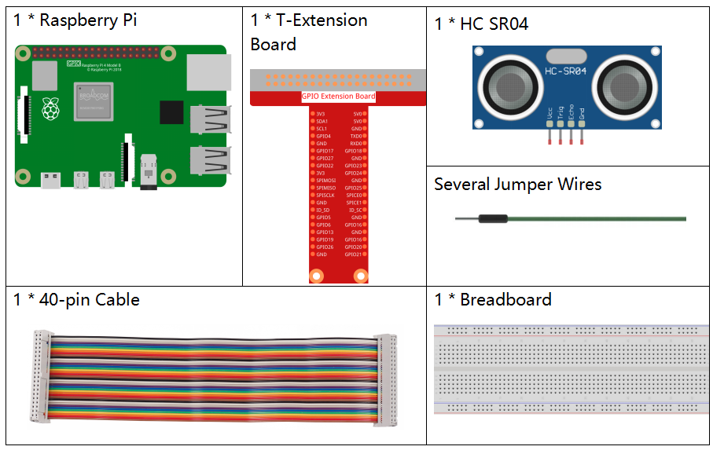
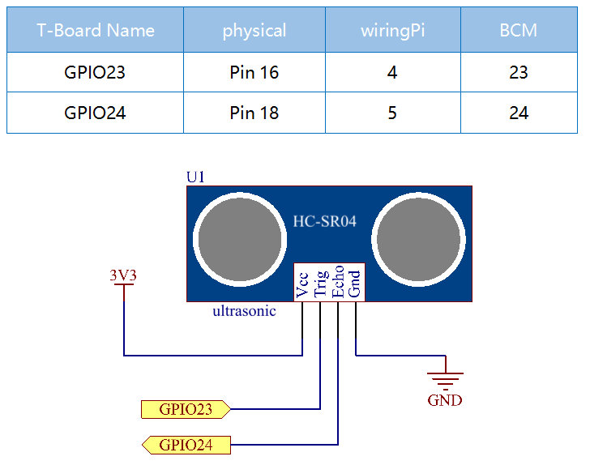

Nota
Ciao, benvenuto nella comunità SunFounder per gli appassionati di Raspberry Pi, Arduino & ESP32 su Facebook! Approfondisci le tue conoscenze su Raspberry Pi, Arduino e ESP32 insieme ad altri appassionati.
Perché unirti a noi?
Supporto Esperto: Risolvi problemi post-vendita e sfide tecniche con l’aiuto della nostra comunità e del nostro team.
Impara & Condividi: Scambia consigli e tutorial per migliorare le tue competenze.
Anteprime Esclusive: Accedi in anteprima agli annunci dei nuovi prodotti.
Sconti Speciali: Approfitta di sconti esclusivi sui nostri ultimi prodotti.
Promozioni e Omaggi Festivi: Partecipa a concorsi e promozioni in occasione delle festività.
👉 Pronto a esplorare e creare con noi? Clicca su [Qui] e unisciti subito!
2.2.5 Sensore a Ultrasuoni
Introduzione
Il sensore a ultrasuoni utilizza onde ultrasoniche per rilevare oggetti con precisione e misurare distanze. Emana onde ultrasoniche e le converte in segnali elettronici.
Componenti
Principio di Funzionamento
Ultrasuoni
Il modulo di misurazione a ultrasuoni offre una funzione di misurazione senza contatto da 2cm a 400cm con una precisione di 3mm. Garantisce un segnale stabile fino a 5m, che si indebolisce gradualmente fino a scomparire a 7m.
Il modulo include trasmettitori e ricevitori ultrasonici e un circuito di controllo. I principi di base sono i seguenti:
Utilizzare un flip-flop IO per gestire un segnale di livello alto di almeno 10μs.
Il modulo invia automaticamente otto impulsi a 40kHz e rileva se c’è un segnale di ritorno.
Se il segnale ritorna, il livello alto dell’uscita IO indica il tempo trascorso dall’emissione alla ricezione dell’onda ultrasonica. La distanza di test è calcolata come = (tempo di livello alto x velocità del suono (340 m/s) / 2.


Il diagramma temporale è mostrato di seguito. È sufficiente fornire un breve impulso di 10μs all’input trigger per avviare la misurazione della distanza, quindi il modulo emetterà un ciclo di 8 onde ultrasoniche a 40 kHz e attiverà l’eco. È possibile calcolare la distanza in base all’intervallo di tempo tra l’invio del segnale di trigger e la ricezione del segnale di eco.
Formula: us / 58 = centimetri o us / 148 = pollici; oppure: distanza = tempo di livello alto * velocità (340 M/S) / 2; si consiglia di utilizzare un ciclo di misurazione superiore a 60 ms per prevenire collisioni tra il segnale di trigger e quello di eco.

Schema Elettrico
Procedure Sperimentali
Passo 1: Costruisci il circuito.

Passo 2: Accedi alla cartella del codice.
cd ~/davinci-kit-for-raspberry-pi/c/2.2.5/
Passo 3: Compila il codice.
gcc 2.2.5_Ultrasonic.c -lwiringPi
Passo 4: Esegui il file eseguibile.
sudo ./a.out
Dopo aver eseguito il codice, il modulo del sensore a ultrasuoni rileva la distanza tra l’ostacolo davanti e il modulo stesso, visualizzando il valore della distanza sullo schermo.
Nota
Se il programma non funziona o viene visualizzato un messaggio di errore: "wiringPi.h: Nessun file o directory di questo tipo», consulta Il codice C non funziona?.
Codice
#include <wiringPi.h>
#include <stdio.h>
#include <sys/time.h>
#define Trig 4
#define Echo 5
void ultraInit(void)
{
pinMode(Echo, INPUT);
pinMode(Trig, OUTPUT);
}
float disMeasure(void)
{
struct timeval tv1;
struct timeval tv2;
long time1, time2;
float dis;
digitalWrite(Trig, LOW);
delayMicroseconds(2);
digitalWrite(Trig, HIGH);
delayMicroseconds(10);
digitalWrite(Trig, LOW);
while(!(digitalRead(Echo) == 1));
gettimeofday(&tv1, NULL);
while(!(digitalRead(Echo) == 0));
gettimeofday(&tv2, NULL);
time1 = tv1.tv_sec * 1000000 + tv1.tv_usec;
time2 = tv2.tv_sec * 1000000 + tv2.tv_usec;
dis = (float)(time2 - time1) / 1000000 * 34000 / 2;
return dis;
}
int main(void)
{
float dis;
if(wiringPiSetup() == -1){ // quando l'inizializzazione di wiringPi fallisce, stampa un messaggio a schermo
printf("setup wiringPi failed !");
return 1;
}
ultraInit();
while(1){
dis = disMeasure();
printf("%0.2f cm\n\n",dis);
delay(300);
}
return 0;
}
Spiegazione del Codice
void ultraInit(void)
{
pinMode(Echo, INPUT);
pinMode(Trig, OUTPUT);
}
Inizializza i pin dell’ultrasuono; nel frattempo, imposta Echo come input e Trig come output.
float disMeasure(void){};
Questa funzione consente di misurare la distanza rilevata dal sensore ultrasonico calcolando il tempo di ritorno.
struct timeval tv1;
struct timeval tv2;
La struct timeval è una struttura utilizzata per memorizzare il tempo attuale. La struttura completa è la seguente:
struct timeval
{
__time_t tv_sec; /* Secondi. */
__suseconds_t tv_usec; /* Microsecondi. */
};
Qui, tv_sec rappresenta i secondi trascorsi dall’Epoch al momento della creazione di struct timeval. Tv_usec indica i microsecondi, ovvero una frazione di secondo.
digitalWrite(Trig, HIGH);
delayMicroseconds(10);
digitalWrite(Trig, LOW);
Viene inviato un impulso ultrasonico di 10 microsecondi.
while(!(digitalRead(Echo) == 1));
gettimeofday(&tv1, NULL);
Questo ciclo vuoto viene utilizzato per assicurarsi che, quando il segnale di attivazione viene inviato, non ci siano segnali di eco interferenti, quindi viene registrato il tempo attuale.
while(!(digitalRead(Echo) == 0));
gettimeofday(&tv2, NULL);
Questo ciclo vuoto serve a garantire che non venga eseguito il passo successivo finché non viene ricevuto il segnale di eco; successivamente viene registrato il tempo attuale.
time1 = tv1.tv_sec * 1000000 + tv1.tv_usec;
time2 = tv2.tv_sec * 1000000 + tv2.tv_usec;
Converte il tempo memorizzato dalla struct timeval in microsecondi totali.
dis = (float)(time2 - time1) / 1000000 * 34000 / 2;
La distanza viene calcolata in base all’intervallo di tempo e alla velocità di propagazione del suono. Velocità del suono nell’aria: 34000 cm/s.